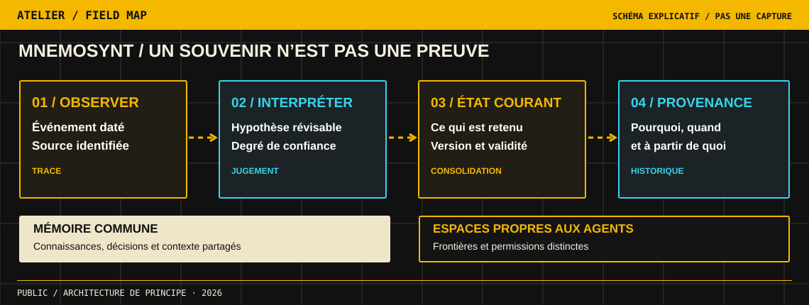

Définir les frontières
Distinguer les décisions communes, la documentation partagée et les espaces propres aux agents. Décrire qui peut proposer, lire, corriger ou confirmer.
Une mémoire de travail pour les agents de l’Atelier : garder les décisions, leur provenance et leurs contradictions, sans confondre un souvenir avec une preuve.

Quand plusieurs agents contribuent à un même chantier, les conclusions se dispersent : une décision se perd entre deux sessions, une hypothèse finit par se faire passer pour un fait, ou un agent recommence une enquête déjà menée. La difficulté n’est pas simplement de stocker du texte ; c’est de savoir ce qui mérite d’être rappelé et pourquoi.
Expérimenter deux niveaux de mémoire, commune et propre à chaque agent, avec des traces de provenance, des états de confiance et une procédure de rappel. Les mémoires privées ne sont pas un réservoir universel accessible à tout le monde.
Distinguer les décisions communes, la documentation partagée et les espaces propres aux agents. Décrire qui peut proposer, lire, corriger ou confirmer.
Utiliser des outils d’accès plutôt qu’une seconde copie improvisée des mêmes données ; conserver la séparation entre collecte, mémorisation et restitution.
Relever la structure des données et les droits sans ouvrir le contenu privé ni faire passer un contrôle de métadonnées pour un test fonctionnel.
Prévoir un parcours où chaque élément retrouvé indique sa source, sa date et sa confiance, puis où les contradictions restent visibles.
Les preuves suivantes correspondent à l’état documentaire relevé début novembre 2026. Elles n’attestent pas une mémoire autonome entièrement validée.
Le raccordement MNEMOSYNT à l’environnement de l’Atelier a été documenté début novembre ; son usage de bout en bout reste un périmètre de recette distinct.
Source interne : journal Atelier, novembre 2026.Le 5 novembre, un relevé borné des métadonnées, emplacements et permissions a obtenu un résultat PASS. Aucun contenu privé n’a été ouvert pour ce contrôle.
Registre d’audit : A1 / 05.11.2026.Le 5 novembre, l’inventaire a relevé deux services accessibles avec réponses HTTP 200 sur leurs contrôles de santé. Cela ne prouve ni le rappel correct ni la séparation effective entre espaces privés.
Registre d’exploitation MNEMOSYNT, relevé du 05.11.2026.Les contrôles de sauvegarde d’autres services de l’Atelier ne prouvent pas une restauration fonctionnelle complète de la mémoire MNEMOSYNT.
Passation infrastructure / lot 1.Tester le rappel de décisions avec provenance, puis tenter volontairement une contradiction et observer sa restitution.
Qualifier une reprise isolée, des permissions effectives et la cohérence de la mémoire restaurée.
Documenter des exemples anonymisés, compréhensibles sans ouvrir l’infrastructure interne.
Une mémoire utile n’est pas celle qui retient tout : c’est celle dont on peut contrôler ce qu’elle croit savoir.